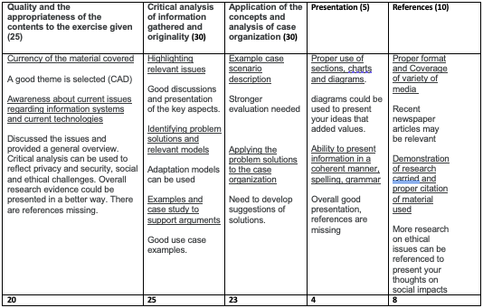

Introdcution to Computer Science, 20 credits

Module learning outcomes
On completion of the module the student will be able to:
・ Identify and explain the architecture, structure and functionality of basic components of computer system
・ Demonstrate a critical understanding of core data structures and programming concepts, including algorithm computability
・ Critically evaluate the functionality of different types of software, i.e., operating system, utility programs, languages and applications.
・ Critically appraise the emerging trends in the field, such as cloud computing, big data, cyber security, and the professional and ethical requirements for dealing with such contemporary computer-based technologies.
Assignment 1 part 1/2: Transaction book
Programming exersice in Python. Two part assignment. Part 1/2 is written plan and explanation of the app.
The application I have written is a bank account book, written in Python with
Tkinter and the data is stored in SQLite 3.
The objective is to enhance a person's knowledge of its transactions, and by manually enter the data it is expected that the
user will gain awareness of its transactions with the purpose to permit the user to
enter transaction values.
The GUI is built using Tkinter. By creating widgets consisting of labels and buttons,
actions can be performed by the user to sort, delete, and search records. I have
created four functions named add, delete, search and query that are called upon
when a user clicks a button from Tkinter. A button in Tkinter is given a command,
and the command is a function created in Python.
Learning outcomes
・ Demonstrate a critical understanding of core data structures and programming concepts including algorithm computability.
・ Critically evaluate the functionality of different types of software, i.e. operating system, utility programs, languages and applications.
Tutor feedback
You identified the right answers and explained well. However, in some instances, you could explain your diagrams or pseudocode better and represent your steps in text e.g. give more details about the next steps etc. In general the testing plan is very good, but there is no need to provide code in this assignment. Overall a very good report organisation. Very good use of diagrams to demonstrate algorithms. Better discussion of datastructures, some extra elaboration on the reasons to use it, it could also add value (e.g. using references).
Assignment 1 part 2/3: Transaction book
Programming exersice in Python. Second part consists of code as set out in part 1.
Assignment instruction:
Develop a Python program which fulfills the functionality of the application you have chosen. It should have an interface design and enable users to:
・ enter at least five records
・ delete and search records based on keyword/string entry
・ sort records in a specific order and display them on the screen
・ select an option on the screen to perform a function
・ get a prompt on screen before an action is performed
test and validate your work:
・Your work needs to be tested and verified using test data as outlined in section 3 of your submission in Part 1 (Unit 8).
・Check the functionality of the algorithms as outlined in section 3 of your submission in Part 1 (Unit 8).
Learning outcomes:
・ Demonstrate a critical understanding of core data structures and programming concepts including algorithm computability.
・ Critically evaluate the functionality of different types of software, i.e. operating system, utility programs, languages and applications.
Link to my code:
・ Find how to link to rep
Tutor feedback:
Overall a very good effort. Well documented assignment with examples and test cases.
Good logic using for and if loop, comments are used to explain and outputs are shown.
Good strategy is taken to implement the logic. Test strategy could be described in detail and comments are used. List positioning using list indexing has been used correctly. Test results are correct.
Overall the coding could be better in terms of using more libraries and Python data structures.
Code implements the correct logic, good use of for and if. Variables are defined correctly.
Assignment 1 part 3/3: MySQL programming challenge
Programming challenge in MySQL.
Assignment instruction:
The Assessment workspace contains the EMP and DEPT tables (described in Appendix A) from a fictional organisation “COMPANY1”. You will need to provide the SQL scripts which achieve the following outcomes:
・List all Employees whose salary is between 1,000 AND 2,000. Show the Employee Name, Department and Salary (4 marks)
・Count the number of people in department 30 who receive a salary and the number of people who receive a commission. (4 marks)
・Find the name and salary of employees in Dallas. (4 marks)
・List all departments that do not have any employees. (4 marks)
・List the department number and average salary of each department. (4 marks)
Learning outcomes:
・Your work needs to be tested and verified using test data as outlined in section 3 of your submission in Part 1 (Unit 8).
・Check the functionality of the algorithms as outlined in section 3 of your submission in Part 1 (Unit 8).
Learning outcomes:
・ Demonstrate a critical understanding of core data structures and programming concepts including algorithm computability.
・ Critically evaluate the functionality of different types of software, i.e. operating system, utility programs, languages and applications.
Link to my code:
・ Find how to link to rep
Tutor feedback:
To be recived
End of module essay
2,000 wordcount, 40% of final grade.
Assignment instruction:
This is a final module essay assessment to examine your awareness of current affairs, challenges, technological developments,
trends and issues in relation to recent development in computer science. The essay fulfils the learning outcome where you are to critically appraise
the emerging trends in the field of computer science and the professional and ethical requirements for dealing with such contemporary computer-based technologies.
For this task, you need to select an organisation as a case example for which secondary information is available through articles, webpages or
you may have a contact working for this organisation.
Learning outcomes:
・Identify and explain the architecture, structure and functionality of basic components of a computer system.
・Critically appraise the emerging trends in the field, such as cloud computing, big data, cyber security, and the professional and ethical requirements for dealing with such contemporary computer-based technologies.
Read my essay!
The essay is discussing wheather a radiologist can be replaced by AI in early diagnos of breastcancer to better utlise the cronic understaffing and shortage or workers.
Find how to link to essay
Tutor feedback:

Grade: 80% (Distinction)
Skills matrix